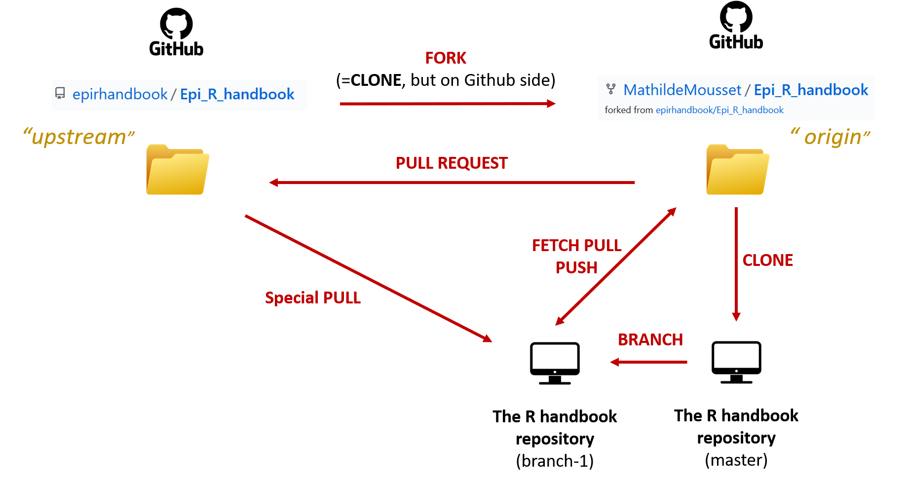

A comunicação em sites deve respeitar diversos princípios éticos e legais para garantir a confiança dos usuários e evitar problemas jurídicos. Alguns dos principais aspectos a serem considerados incluem:
🕵️♂️Respeito à Privacidade dos Usuários
É fundamental que os sites respeitem a privacidade dos usuários, garantindo que suas informações pessoais sejam protegidas e não sejam compartilhadas sem consentimento explícito. Isso inclui a implementação de políticas claras de privacidade e o uso de práticas seguras de coleta, armazenamento e processamento de dados.
📜Uso Adequado de Dados Pessoais
Os sites devem utilizar os dados pessoais dos usuários de forma responsável e ética, limitando-se ao necessário para fornecer os serviços solicitados. O uso indevido ou a venda de dados pessoais sem consentimento é uma violação grave da privacidade do usuário e pode resultar em repercussões legais.
📝Conformidade com Leis de Proteção de Dados
É imprescindível que os sites estejam em conformidade com as leis de proteção de dados aplicáveis, como o Regulamento Geral de Proteção de Dados (GDPR) na União Europeia e a Lei Geral de Proteção de Dados (LGPD) no Brasil. Isso inclui o respeito aos direitos dos titulares dos dados, como o direito de acesso, retificação e exclusão de informações pessoais.
💼Função e Utilidade da Gestão de Projetos
A gestão de projetos desempenha um papel fundamental no sucesso de qualquer empreendimento, independentemente do seu tamanho ou complexidade. Ela consiste em uma série de práticas e técnicas destinadas a organizar, planejar, executar e controlar as atividades relacionadas a um projeto. Abaixo estão algumas das principais funções e utilidades da gestão de projetos:
📈Definição de Metas e Objetivos
Um dos primeiros passos na gestão de projetos é estabelecer metas claras e objetivos específicos. Isso ajuda a garantir que todos os membros da equipe estejam alinhados em relação ao que precisa ser alcançado e fornece um ponto de referência para medir o progresso ao longo do tempo.
💸Alocação Eficiente de Recursos
A gestão de projetos envolve a alocação cuidadosa de recursos, incluindo pessoas, tempo e dinheiro. Isso significa identificar as necessidades do projeto, atribuir tarefas adequadamente e garantir que os recursos estejam disponíveis quando necessário para evitar atrasos ou custos excessivos.
📅📆Acompanhamento de Progresso
Uma parte essencial da gestão de projetos é monitorar o progresso em relação aos objetivos estabelecidos. Isso envolve o acompanhamento regular do desempenho da equipe, identificando quaisquer desvios do plano original e tomando medidas corretivas conforme necessário para manter o projeto no caminho certo.
✅Resolução de Problemas
Nenhum projeto está isento de desafios e obstáculos ao longo do caminho. A gestão de projetos inclui a capacidade de identificar e resolver problemas de forma eficaz, seja ajustando o plano, realocando recursos ou buscando soluções alternativas. Isso ajuda a manter o projeto em movimento e minimiza o impacto de contratempos.
GitHub e Git
O Git é um sistema de controle de versão amplamente utilizado para gerenciar o código fonte de projetos de software. Ele permite que os desenvolvedores acompanhem as alterações feitas no código ao longo do tempo, facilitando o trabalho colaborativo e a rastreabilidade das modificações. Cada desenvolvedor possui uma cópia completa do repositório, o que torna o Git robusto e eficiente para o gerenciamento de versões de código-fonte.

O GitHub é uma plataforma que utiliza o Git e oferece recursos adicionais que complementam a funcionalidade básica do Git. Além de servir como um repositório remoto para projetos Git, o GitHub fornece ferramentas poderosas para colaboração, gerenciamento de projetos e integração contínua. Os recursos incluem controle de acesso granular para colaboradores, criação de pull requests para revisão de código, gerenciamento de problemas (issues) para rastrear bugs e solicitações de recursos, integração com ferramentas de automação de fluxo de trabalho e muito mais.
Esses recursos fazem do GitHub uma plataforma indispensável para desenvolvedores compartilharem e colaborarem em projetos de código aberto e privados. Ele promove a transparência, a colaboração eficiente e a padronização das práticas de desenvolvimento de software.
Multimídia e Incorporação no GitHub
Além de hospedar código fonte, o GitHub também suporta a inclusão de arquivos multimídia, como imagens, vídeos e áudio, em seus repositórios. Isso permite uma experiência mais rica ao visualizar e colaborar em projetos. Você pode incorporar esses elementos em suas páginas Markdown no GitHub, fornecendo uma forma eficaz de comunicar visualmente ideias e conceitos aos colaboradores e usuários.
Função do Docker
O Docker é uma plataforma de software que simplifica o processo de desenvolvimento, implantação e execução de aplicativos em ambientes isolados chamados contêineres. A função principal do Docker é criar contêineres que encapsulam o código de um aplicativo juntamente com suas dependências, como bibliotecas e ferramentas, em um único pacote. Isso garante que o aplicativo seja executado de forma consistente em diferentes ambientes, desde o ambiente de desenvolvimento até a produção.
O Docker também oferece suporte para a incorporação de conteúdo multimídia em contêineres, permitindo que você desenvolva e distribua aplicativos que incluam imagens, vídeos, áudio e outros tipos de mídia. Isso é especialmente útil em cenários onde você precisa criar ambientes de teste ou demonstrar o funcionamento de um aplicativo em diferentes contextos.

 GitHub e Git
GitHub e Git Função do Docker
Função do Docker